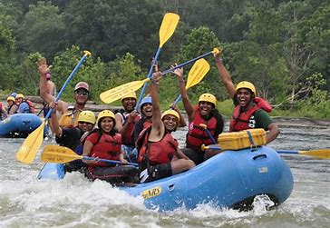
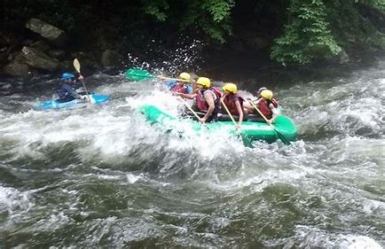

Explore Our Trips

Chesapeake Challenge
A full-day journey on the Chesapeake Bay, offering a mix of calm waters and thrilling rapids, with a chance to spot local wildlife and enjoy a beachside lunch.

Savage River Sprint
A half-day excursion through the exhilarating rapids of the Savage River Reservoir, perfect for experienced rafters seeking an adrenaline rush.
Available Trips
| Trip | What awaits? | Duration | Price |
|---|---|---|---|
| Chesapeake Challenge | Immerse yourself in a day-long journey on the Chesapeake Bay, the largest estuary in Maryland. This trip offers a unique mix of tranquil waters and occasional rapids, providing a balance of relaxation and thrill. You’ll traverse through varied ecosystems, potentially spot local wildlife, and savor a delightful lunch on a secluded beach. This trip is designed to accommodate all skill levels and includes professional guides and equipment. | Full Day | $150 |
| Savage River Sprint | Experience a surge of adrenaline with our Savage River Sprint, a half-day excursion that takes you through the exhilarating rapids of the Savage River Reservoir. Renowned for its crystal-clear waters and abundant fish, this trip offers an action-packed experience for seasoned rafters. Our professional guides will ensure your safety while you relish the thrill of the ride. Please note that this trip is recommended for those with previous rafting experience. | Half Day | $100 |
Contact Us
Interested in one of our trips? Contact us here for more information!